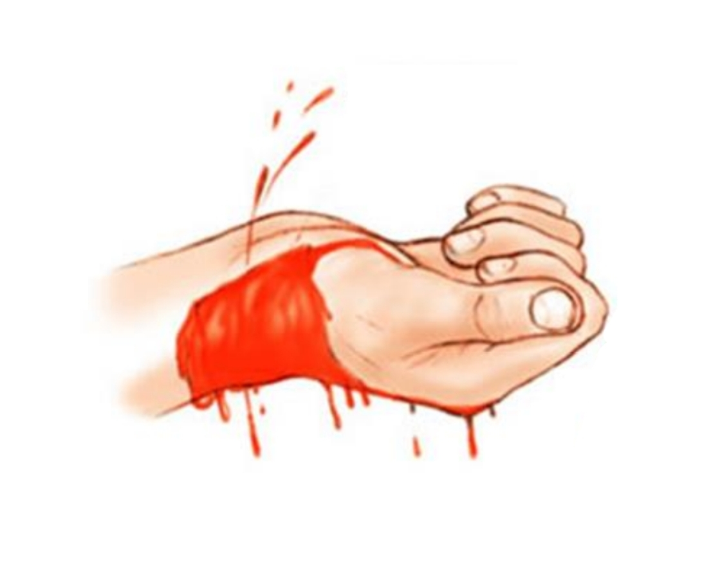
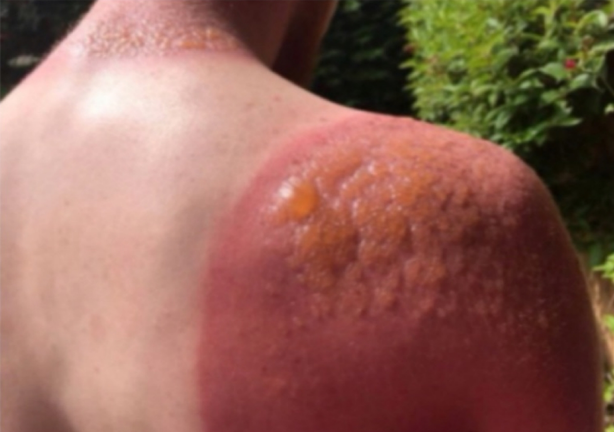

End-Rotation
BBB - Practical exam • 2025-2026
All Labs
Biochemistry 🧪
Biophysics ⚛️
Basic emergency care ⚕️
Basic emergency care ⚕️
Q1.
A.
Which vessel is cut?
Show Answer
Artery
B.
What is its charactersics?
Show Answer
Spurting blood, pulsating flow, and bright red color.

Q2.
A.
What degree is the type of the burn?
Show Answer
Second degree
B.
What is its charactersics?
Show Answer
It has blister and it's caused by a flame or hot liquid and it's very painful.

Biochemistry 🧪
Q3.
Starch is used as an indicator in which reaction?
A. Acid–base neutralization reaction
B. Precipitation reaction
C. Oxidation–reduction titration
D. Complexometric (EDTA) titration
E. Gas evolution reaction
Show Answer
C. Oxidation–reduction titration
Q4.
In case of liver disease, the color of urine becomes:
A. Pale yellow
B. Milky white
C. Deep yellow to brown
D. Deep yellow to red
E. Colorless
Show Answer
C. Deep yellow to brown
Q5.
In Bial’s test, the furfural formed reacts (condenses) with which compound?
A. Resorcinol
B. Orcinol
C. α-Naphthol
D. Phenol
E. Aniline
Show Answer
B. Orcinol
Q6.
NaOH can't be used as standard solution because?
A. It reacts rapidly with most acids during titration
B. It decomposes on standing at room temperature
C. It is insoluble in water
D. It absorbs moisture and carbon dioxide from air
E. It has a low equivalent weight
Show Answer
D. It absorbs moisture and carbon dioxide from air
Biophysics ⚛️
Q7.
In which heat therapy is the part of the body to be treated placed between two electrodes?
A. Short-wave diathermy
B. Infrared radiation
C. Microwave diathermy
D. Ultrasound therapy
E. Paraffin wax bath
Show Answer
A. Short-wave diathermy
Q8.
During a portable chest X-ray in the ICU, what is the safest position for the radiographer?
A. Standing near the patient’s head
B. Standing by the patient’s feet
C. Standing beside the examination table
D. Standing behind the mobile X-ray unit
E. Standing at least 2 meters away from the primary beam
Show Answer
E. Standing at least 2 meters away from the primary beam
Q9.
Low energy X-ray causes?
A. Deep tissue necrosis
B. Bone marrow suppression
C. Cataract formation
D. Genetic mutations
E. Superficial skin damage
Show Answer
E. Superficial skin damage
Q10.
Why Gel is used in ultrasound?
A. To cool the transducer during operation
B. To act as a lubricant for patient comfort
C. To eliminate air and allow better transmission of the waves
D. To disinfect the skin before ultrasound
E. To enhance image contrast on the screen
Show Answer
C. To eliminate air and allow better transmission of the waves